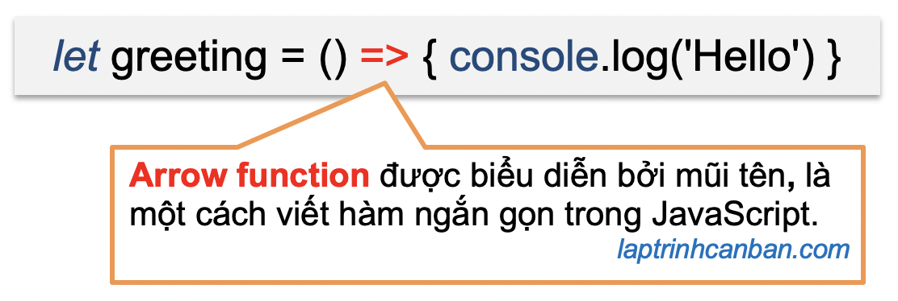

Có 4 phương pháp tạo hàm trong JavaScript là sử dụng từ khóa function, sử dụng biểu thức hàm, sử dụng hàm tạo (constructor) và sử dụng hàm Arrow. Trong đó, với phương pháp sử dụng Arrow function (hàm mũi tên), chúng ta có thể đơn giản hóa cách tạo hàm ẩn danh trong JavaScript. Vậy Arrow function là gì, cách tạo hàm trong JavaScript bằng Arrow function như thế nào, cần chú ý gì khi sử dụng Arrow function trong JavaScript, chúng ta hãy cùng tìm hiểu tất cả trong bài học hôm nay.
- Xem thêm: Hàm ẩn danh (Anonymous Function) trong JavaScript.
- Xem thêm: Function trong JavaScript với cách tạo và gọi hàm.
Arrow function là gì
Arrow function hay còn gọi là hàm mũi tên là là một cú pháp ngắn gọn dùng để viết hàm trong JavaScript. Arrow function được biểu diễn bởi ký tự mũi tên =>, và bằng cách sử dụng Arrow function, chúng ta có thể đơn giản hóa việc khai báo các hàm ẩn danh trong JavaScript.

Arrow function và cách rút gọn hàm ẩn danh trong JavaScript
Trong bài Hàm ẩn danh (Anonymous Function) trong JavaScript chúng ta đã biết cú pháp khai báo hàm ẩn danh trong JavaScript như sau:
let biến = function (tham số 1, tham số 2, …) {
Câu lệnh 1 trong hàm;
Câu lệnh 2 trong hàm;
…
return giá trị trả về;
}
Với Arrow function, chúng ta có thể đơn giản hóa việc khai báo hàm ẩn danh trong JavaScript bằng cách bỏ đi từ khóa function và thay thế bằng dấu mũi tên => như sau:
let biến = (tham số 1, tham số 2, …) => {
Câu lệnh 1 trong hàm;
Câu lệnh 2 trong hàm;
…
return giá trị trả về;
}
Ví dụ cụ thể, chúng ta có hàm ẩn danh dùng để tính tổng 2 số sau đây:
let sum = function(x, y) { |
Bằng cách dùng arrow function, chúng ta hoàn toàn có thể rút gọn và viết lại hàm trên như sau:
let sum = (x, y) =>{ |
Lại nữa, do chỉ có 1 xử lý duy nhất trong hàm nên chúng ta còn có thể viết gọn các dòng code trên một dòng như sau:
let sum = (x, y) => {return( x + y);} |
Cách gọi hàm ẩn danh tạo bởi Arrow function trong JavaScript
Về căn bản thì hàm ẩn danh tạo bởi biểu thức hàm hay là Arrow function cũng đều là hàm ẩn danh trong JavaScript, do đó cách gọi của hàm ẩn danh tạo bởi Arrow function cũng tương tự như với hàm ẩn danh thông thường.
Cách gọi hàm ẩn danh chi tiết đã được Kiyoshi hướng dẫn ở bài trước rồi, hãy ôn tập lại ở link dưới đây:
Sau đây chúng ta sẽ xem một vài ví dụ cụ thể khi gọi hàm ẩn danh tạo bởi Arrow function trong JavaScript như sau:
Ví dụ chúng ta có hàm ẩn danh tạo bởi arrow function như sau:
(x, y) => {console.log( x + y)} |
1. Gán hàm ẩn danh vào một biến và gọi tên biến khi dùng hàm:
let sum = (x, y) => {console.log( x + y)} |
2. Gọi trực tiếp một hàm ẩn danh trong JavaScript:
((x, y) => {console.log( x + y)})(1,2) |
Rút gọn Arrow function trong JavaScript
Chúng ta đã biết sử dụng Arrow function trong JavaScript để rút gọn việc khai báo hàm ẩn danh rồi. Tuy nhiên, chúng ta còn có thể rút gọn chính cả arrow function để viết code ngắn gọn hơn nữa. Hãy cùng xem các trường hợp có thể rút gọn hàm Arrow function trong JavaScript sau đây:
Khi chỉ có một tham số duy nhất trong hàm Arrow function
Khi chỉ có một tham số duy nhất trong hàm Arrow function, chúng ta có thể bỏ đi cặp dấu ngoặc () như sau:
let biến = tham số => {
Câu lệnh
…
return giá trị trả về;
}
Ví dụ:
let find_division = x => {y=x/10;return(y)}; |
Khi trong hàm không chứa tham số
Nếu trong hàm Arrow function không chứa tham số, chúng ta lược bỏ tham số và khai báo hàm như sau:
let biến = () => {
Câu lệnh 1 trong hàm;
Câu lệnh 2 trong hàm;
…
return giá trị trả về;
}
Ví dụ:
let greeting = () => { console.log('Hello')} |
Khi chỉ có xử lý duy nhất là lệnh return trong hàm
Nếu trong hàm Arrow function chỉ có một lệnh duy nhất là lệnh return để trả về giá trị, chúng ta cũng có thể bỏ đi cặp dấu ngoặc nhọn {} đi như sau:
let biến = (tham số 1, tham số 2, … ) => giá trị trả về
Ví dụ:
let find_sum = (x,y) => x+y; |
Khi chỉ có 1 tham số truyền vào và 1 giá trị trả về từ hàm
Trong trường hợp chỉ có 1 tham số truyền vào và 1 giá trị trả về trong hàm, chúng ta có thể bỏ cả đi cặp dấu () lẫn {} như sau:
let biến = tham số => giá trị trả về
Ví dụ:
let add10 = x => x + 10; |
Có nên rút gọn Arrow function?
Cách rút gọn Arrow function khi khai báo hàm ẩn danh trong JavaScript đặc biệt hữu ích khi chúng ta sử dụng hàm ẩn danh như là đối số của một hàm khác trong chương trình, giúp chúng ta rút gọn tối đa số lượng code mà vẫn giữ nguyên công suất của hàm.
Ví dụ:
function calculate(x, y, func){ |
Tuy nhiên nếu chúng ta không có kiến thức về Arrow function trong JavaScript thì việc phân tích logic của một lệnh như ở trên sẽ là rất khó khăn. Có lẽ đây cũng là nhược điểm duy nhất của hàm arrow trong JavaScript.
Chú ý khi sử dụng Arrow function trong JavaScript
Mặc dù sử dụng arrow function thì rất tiện lợi, tuy nhiên chúng ta cũng cần chú ý 2 điều khi sử dụng arrow function trong khai báo hàm JavaScript như sau:
Chú ý khi trả về giá trị là Object litera từ hàm tạo bởi Arrow function rút gọn trong JavaScript
Ở phần trên chúng ta đã biết trong một hàm mà chỉ có một lệnh duy nhất là lệnh return được thực thi thì chúng ta có thể lược bỏ đi cặp dấu {} khi viết hàm. Ví dụ:
let find_sum = (x,y) => x+y; |
Tuy nhiên, nếu giá trị trả về từ hàm này là một Object literal, để tránh nhầm lẫn với cặp dấu {} sử dụng trong object literal thì chúng ta cần phải bọc Object literal này lại trong một cặp dấu ngoặc ().
Object literal là kiểu cú pháp tạo object sử dụng cặp dấu ngoặc {} và bên trong đó là danh sách các property (thuộc tính) của object.
Ví dụ, chúng ta viết:
let func = (x, y) => ({name:x, old:y}); |
Còn cách viết sau đây là cách viết sai:
let func = (x, y) => {name:x, old:y};
Không thể sử dụng arguments object trong hàm được tạo bởi Arrow function
Đối tượng arguments giúp chúng ta thao tác với mảng trong hàm JavaScript một cách đơn giản và hiệu quả khi không biết trước số lượng tham số của hàm. Tuy nhiên với các hàm tạo bởi Arrow function trong JavaScript thì rất tiếc là chúng ta không thể sử dụng loại object này. Ví dụ, bạn sẽ không thể tính ra tổng khi sử dụng arguments trong hàm được tạo bởi Arrow function như sau:
let sum = () =>{ |
Tổng kết
Trên đây Kiyoshi đã hướng dẫn bạn về Arrow function trong JavaScript rồi. Để nắm rõ nội dung bài học hơn, bạn hãy thực hành viết lại các ví dụ của ngày hôm nay nhé.
Và hãy cùng tìm hiểu những kiến thức sâu hơn về JavaScript trong các bài học tiếp theo.
HOME>> học javascript - lập trình javascript cơ bản>>08. hàm trong javascript